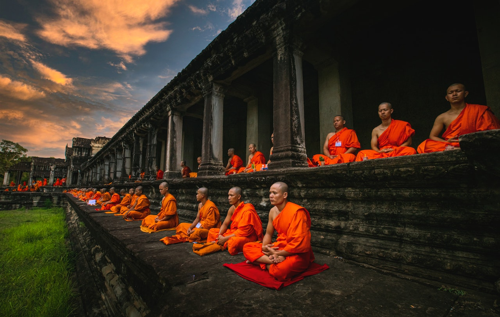

Pchum Ben
Pchum Ben, also known as Ancestors' Day, is a significant Cambodian festival that holds deep cultural and spiritual meaning. Celebrated over a span of 15 days in September or October, Pchum Ben is dedicated to honoring deceased ancestors and offering them blessings. During this time, Cambodians gather at pagodas and temples to pay their respects and make merit for their ancestors. They bring food offerings, such as sticky rice and desserts, which are believed to sustain the spirits in the afterlife. Monks lead the ceremonies, recite prayers, and guide participants in performing rituals. Pchum Ben is a time for reflection, remembrance, and a connection to one's ancestral roots.
Pchum Ben carries immense significance within Cambodian culture, acting as a bridge between the living and the deceased. The festival is deeply rooted in the belief of karma and the cycle of rebirth. Cambodians believe that during this period, the gates of hell open, allowing the spirits of their ancestors to roam the Earth. To ensure their ancestors' souls find peace and liberation, Cambodians make offerings and perform acts of kindness, such as releasing caged birds and offering donations to monks. Pchum Ben is not only a time for honoring the departed but also for fostering unity among families and communities as they come together to celebrate their shared heritage and pay homage to their ancestors' memory. The atmosphere during Pchum Ben is one of both solemnity and festivity. People dress in traditional attire and engage in various cultural activities, including traditional dance performances and music. The festival creates a sense of unity and connection among Cambodians, as families and communities come together to honor their ancestors and reinforce their bonds. Pchum Ben serves as a powerful reminder of the importance of familial ties, cultural heritage, and the spiritual beliefs that form an integral part of Cambodian society.
